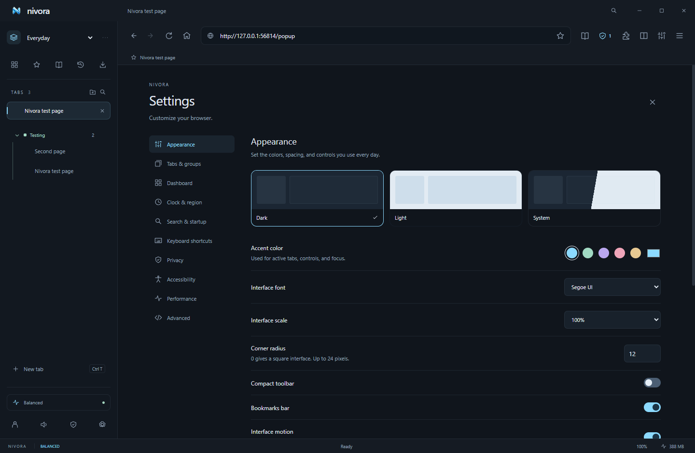
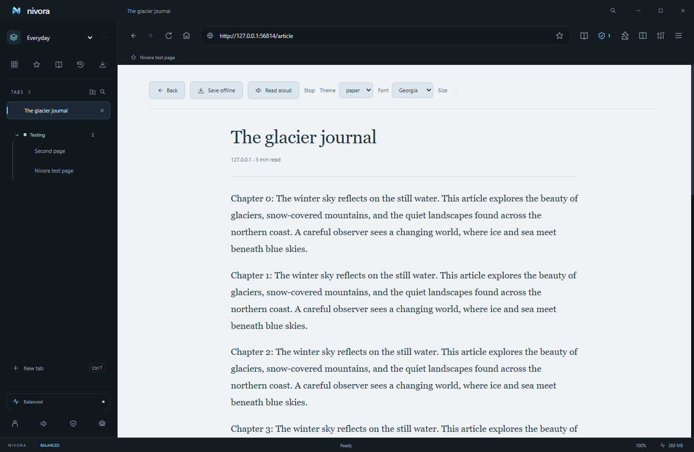

A little help goes a long way.
Everything you need to get comfortable with Nivora. These guides describe the working desktop browser and clearly mark features that need hosting or a future release.
No topics match. Try “tabs”, “clock”, “extensions” or “updates”.
Getting started
- Download the Windows installer from the download page. Keep its signature / checksum information in mind before running it.
- Open Nivora and search from either the address bar or dashboard search box. No account is needed.
- Choose Settings using the sliders button or
Ctrl+,. Set your tabs, theme, dashboard and clock. - Save bookmarks with
Ctrl+D, search tabs withCtrl+Shift+A, and open the command center withCtrl+K.
Nivora is built by gamers, for gamers, and brought to you by IconRealms. Its default dashboard includes Discord, PulsedConnect and PulsedMC alongside everyday web shortcuts.
Platforms & downloads
The download page shows current release availability for Windows, Mac, Linux, iOS and Android. A platform is offered only when an actual compiled download exists.
| Platform | Distribution | Notes |
|---|---|---|
| Windows x64 | Setup EXE and portable EXE | Current desktop release. Setup supports updates; portable uses manual downloads. |
| Mac | Universal DMG / ZIP preview | Intel and Apple silicon. Currently unsigned and not notarized; updates are manual. Packaged launch is checked on a Mac CI runner. |
| Linux x64 | AppImage / DEB preview | Preview packages are available. Packaged launch and tab controls passed in Ubuntu CI; other distributions need validation. AppImage supports updates; DEB updates are manual. |
| iOS | Planned native app | Electron does not produce an iOS browser. No App Store download is available. |
| Android | Planned native app | Electron does not produce an Android APK. No Play Store download is available. |
The optional phone companion is a web app for synced links and saved reading; it is separate from the planned native browsers. Windows executables are currently unsigned. A matching SHA-256 checksum can verify that a file matches the release catalog, but is not proof of a verified publisher.
Install the Mac preview
Open the universal DMG and copy Nivora Browser to Applications. This preview is unsigned and not notarized. If macOS prevents it from opening, consult Apple’s guidance for unidentified developers and verify the official download and checksum. Nivora does not ask you to disable Gatekeeper. Automatic updates are disabled in this preview.
Browsing & search
Nivora uses Electron’s Chromium engine to render real websites with HTML, CSS, JavaScript, WebAssembly, HTTPS and standard browser storage. Remote pages run in sandboxed views.
Available search engines are Google, DuckDuckGo, Bing, Brave, Ecosia and YouTube. Settings → Search & startup also accepts a custom HTTPS search URL containing %s. Address suggestions come from your local tabs, bookmarks and history.
g snow | Search Google |
ddg privacy | Search DuckDuckGo |
b games | Search Bing |
yt music | Search YouTube |
br guides | Search Brave |
Back, forward, reload, stop, find, zoom, private windows, multiple windows, print, PDF export, complete HTML saving and download controls are included. Some authentication or DRM streaming providers may restrict embedded browsers.
Tabs, groups & Glance
Settings → Tabs & groups switches between vertical and horizontal layouts. You can change the tab shape, spacing and vertical sidebar width. Drag tabs to reorder, use the middle mouse button to close them, or right-click for pin, mute, duplicate, sleep and reopen controls.
Groups
Use the folder-plus button above your tabs to create a named group with a color. Right-click a tab to assign it to a group, or drop a tab into a group. Group headers collapse / expand; the active tab stays visible. Removing a group keeps its tabs.
Glance previews
Right-click a link on a website and choose Preview link. The preview is an interactive Chromium page in a temporary view. Close it or choose Open as tab to keep it. Preview-only loads do not enter Nivora history, but the remote server can still log the visit and the page can use the current website session.
Split view
Open two website tabs in the same workspace, then use Split view or right-click a background tab to split with it. Exit using the status-bar control. Both pages stay awake while split.
Workspaces
Use Everyday, Gaming and Work to separate your tab collections. You can add named spaces and move tabs using the right-click menu. Groups belong to a workspace and layouts are remembered in regular sessions.
Themes & customization
Settings → Appearance controls dark, light or system theme, accent color, interface font / scale, corner radius, compact toolbar, bookmarks bar, motion and toolbar button visibility. Settings can be exported and imported.
Settings → Dashboard offers Studio, Minimal and Focus layouts; one to three widget columns; background presets; local PNG / JPEG / WebP wallpaper up to 8 MB; and dimming. You can edit the website shortcuts, including their names, URLs and colors. Wallpaper and preferences are saved locally.
Reduced-motion preferences are respected. The website dark-mode option uses color inversion and may look unusual on pages with complex visual layouts.

Clock & region
Settings → Clock & region provides a 24-hour clock or a 12-hour clock with AM / PM, optional seconds, long / short / hidden date, IANA time zone and locale.
Use local for your computer’s time zone, or a zone such as America/New_York, Europe/London or UTC. The greeting follows that clock. Your optional name is set under Dashboard.
Dashboard widgets
- Notes: locally saved personal text.
- Tasks: a simple checklist with add, check and remove.
- Reading list: saved articles, available offline.
- Browser stats: real process working-set memory and mode controls.
- Calendar: current-month calendar.
- Personal message: your own dashboard message.
- Focus timer: customizable duration, start / pause / reset.
- Custom widgets: text and optional website links, with a title and color.
Hide widgets in Settings → Dashboard. Drag handles on the dashboard or use ordering buttons to rearrange grid widgets. The clock and website shortcuts stay above the grid. Custom widgets do not execute arbitrary scripts or load external live feeds.
Keyboard shortcuts
Settings → Keyboard shortcuts records a new key combination for a command. Conflicting combinations are rejected; commands can also be unassigned or reset to defaults.
| Command | Default binding |
|---|---|
| Focus address / command center | Ctrl+L / Ctrl+K |
| New / close / reopen tab | Ctrl+T / Ctrl+W / Ctrl+Shift+T |
| New / private window | Ctrl+N / Ctrl+Shift+N |
| Next / previous tab | Ctrl+Tab / Ctrl+Shift+Tab |
| Bookmark / find | Ctrl+D / Ctrl+F |
| History / downloads | Ctrl+H / Ctrl+J |
| Reader / media / tab search | Ctrl+Shift+R / Ctrl+Shift+M / Ctrl+Shift+A |
| Settings | Ctrl+, |
| Reload / print / save | Ctrl+R / Ctrl+P / Ctrl+S |
| Zoom in / out / reset | Ctrl+plus / Ctrl+minus / Ctrl+0 |
| Fullscreen / back / forward | F11 / Alt+Left / Alt+Right |
Ctrl+1 through Ctrl+9 are fixed tab-jump fallbacks. F5 reloads and Escape closes a preview. On a Mac build, Command is accepted as the primary control modifier.
Ad & tracker blocking
Nivora bundles the Ghostery filter engine with EasyList and EasyPrivacy. Network rules block matching requests; cosmetic CSS hides matching page elements. Protection is active by default.
Open the shield for rule counts, recent blocked requests, a site exception toggle, filter updates and custom rules. Counts reflect this launch, not invented lifetime statistics. Examples:
||example.com/ads^blocks matching ad URLs.example.com##.advertisementhides a page selector.@@||example.com/allowed^adds a matching network exception.
Cosmetic CSS applies after loading. Scriptlet injection is absent. Not all video advertisements or anti-adblock pages can be handled. Pausing protection or adding a rule may require reloading the page.
Privacy & security
Website views have no Node.js access or browser command bridge. They use sandboxing, context isolation, cross-origin security and normal Chromium TLS certificate validation. Nivora does not bypass certificate checks.
Private windows
Private windows have distinct in-memory website sessions and do not persist history or tabs. Downloaded files and intentional edits to bookmarks, groups, notes, passwords and shared settings still persist. Private request URLs are excluded from blocker diagnostics.
Local data
On Windows, data is normally stored at %APPDATA%/nivora-browser/. Bookmarks, settings, history and notes are ordinary local JSON. Saved passwords and account tokens use OS credential protection; the Windows release uses DPAPI. Profile writes use a temporary file, flush, rename and last-good backup.
Controls
Settings → Privacy clears history, cache and cookies / site storage. Website permissions prompt for supported requests such as camera / microphone, geolocation and notifications. DNT / GPC preference headers are sent by default; websites decide whether to honor them. The optional third-party-cookie control strips network Cookie / Set-Cookie headers; it is not complete storage partitioning.
Network services
Searches go to your chosen engine. Websites, downloaded filter updates, GitHub update checks and an optional configured sync service receive the requests you make to them. Nivora has no built-in crash telemetry service. This static website uses no tracking analytics, external fonts or account cookies; GitHub may receive a request for the current public release catalog.
Performance & gaming
| Mode | Idle tab timeout |
|---|---|
| Balanced | 15 minutes by default; configurable from 1 to 120 |
| Gaming | 3 minutes |
| Battery saver | 2 minutes |
Sleeping releases a background page view. Active, pinned, audible, loading and split-view tabs stay awake. Chromium also throttles background work. Restored tabs load lazily; the performance panel shows actual per-process CPU and working-set memory.
Sleeping pages reload and may lose unsaved form edits. Modes do not set hard CPU, RAM or bandwidth limits, automatically detect games, or establish a benchmarked speed advantage. Hardware acceleration can be changed under Performance and applies after restarting.
Reader & offline pages
Open a readable article and choose Reader mode or Ctrl+Shift+R. Mozilla Readability extracts article text into a clean page. Choose paper, dark or sepia theme, font and size.
Save offline stores the article’s text locally in your reading list. Saved text can be opened without a website view or connection. Read aloud uses browser text-to-speech. Complex applications and some paywalled pages may not yield a readable article. Full website applications are not downloaded for offline operation.

Password vault
Browser menu → Passwords manages saved credentials. Add a record manually or explicitly capture credentials from an HTTPS sign-in page. A strong password generator is included.
Secrets are encrypted with OS credential protection, and are excluded from normal interface state. Filling is explicit and restricted to the exact saved HTTPS origin. HTTP fill is blocked. Pages are not silently monitored for password saves. Keep your OS account secure; an unlocked OS session can access its own vault.
Extensions
Browser menu → Extensions → Load unpacked lets you choose a trusted extension directory containing manifest.json. A native confirmation displays requested permissions before installation. Enable / disable, reload, remove and pin supported extensions; popup / options pages can be opened.
Electron implements a subset of Chromium extension APIs. Content-script extensions are tested. Many Chrome-specific APIs, one-click Chrome Web Store installation, individual permission revocation and automatic extension updates are unavailable. Extensions are disabled in private windows. Only install code you trust.
Google profile sign-in
Nivora 2.3 includes the owner’s Google Desktop OAuth registration. Click the profile icon beside the address bar, then Continue with Google. Authentication opens in your default browser. After successful sign-in, Nivora comes forward and shows your Google name, email and profile picture.
Your verified profile and a cached photo are saved on this device and restored after a restart. Sign out on this device removes that local identity. Access tokens, ID tokens and Google passwords are not saved. Profile switching and Google-backed account syncing are planned separately.
How authentication works
The system-browser flow uses PKCE, a fresh callback state and identity nonce, and a random-port listener bound only to 127.0.0.1. Google’s auth library verifies the signed ID token, including its audience, issuer and expiration. Nivora requests only basic identity scopes. Google consent-screen publication and testing access remain controlled by the application owner’s Google Cloud project.
Google account settings can override the bundled Desktop client with a different registration. Optional custom client secrets use secure OS storage. Desktop OAuth clients are public clients; bundled client configuration cannot be kept confidential inside a distributed executable. No Google account password or private server credential is bundled.
Google websites remain separate
Google restricts sign-in from embedded browser frameworks, including Electron. Signing into your Nivora profile does not sign YouTube, Gmail or Drive into its website tabs, copy cookies or enable Chrome Sync. Nivora detects Google website login navigation and offers to open the original site in your system browser.
References: Google Desktop OAuth and Google’s browser guidance.
Discord Rich Presence
Nivora 2.2 connects to the installed Discord desktop app using local IPC. The default application ID is 1557576973809614858. Its details say Using Nivora Browser and its state says Brought to you by IconRealms, with View our site! and Support us! buttons. View our site! opens the Nivora website; Support us! opens kuro.iconrealms.net. Both links can be customized.
Open Browser menu → Discord presence or Settings → Discord presence. Edit the application ID, activity name, Playing / Listening / Watching / Competing type, member-list display field, details and state links, large / small image keys or HTTPS URLs, hover text and image links, party size, two buttons, and elapsed / custom start-end timers.
Save & publish saves the configuration locally. Connect, Disconnect, Update presence and Restore defaults provide direct controls. It reconnects every fifteen seconds when the desktop app becomes available; Published appears only after Discord acknowledges the activity.
Presence clears when Nivora exits and pauses in private windows by default. Page URLs, titles, history and searches are never automatically published. Enable activity sharing in Discord. A web-only Discord session cannot provide the native connection. Buttons may only be visible to other viewers; Discord may keep the registered application name, so use Details / State or your own app ID to change its identity.
Artwork can reference assets uploaded to your Discord application, or HTTPS image URLs. This controls Rich Presence, not the user’s online / idle / DND status. See Discord’s RPC documentation.
Accounts, sync & backups
The browser works without an account. Sync is disconnected by default and requires a separately hosted HTTPS sync service. Enter its endpoint in Account & sync, create / sign into an account, and unlock with a separate encryption passphrase of at least 12 characters.
Choose bookmarks, tabs, history, settings / themes, groups / workspaces, reading list or passwords. Merge & sync combines snapshots; Upload this device pushes a snapshot; Restore from cloud replaces selected saved categories. Other-device tabs appear under Continue browsing. Merge does not propagate deleted records.
Encryption and devices
Snapshots and .nivora backups use AES-256-GCM with PBKDF2-SHA256 (310,000 iterations), fresh salt and nonce. The encryption phrase stays on the client while unlocked and is never sent to the sync API. The service can still see email, device labels / activity, sizes and network metadata. Losing the encryption phrase makes the data unrecoverable.
Manage / revoke devices, delete cloud data or delete the account in the browser. QR pairing codes are one-use and expire after five minutes. The phone companion can decrypt tabs / bookmarks / saved articles and send a page back to desktop; it is not a native mobile browser. Keep linking codes private.
Local encrypted backups
Backups are available without hosting. Settings → Advanced exports / restores encrypted browser records, passwords, groups and layouts. Sign-in tokens, website cookies and extension code are excluded. Extensions transfer as recommendations rather than executable installations.
Automatic updates
Installed update-capable desktop builds use the public binary feed from official GitHub Releases. Automatic checks run shortly after launch and every four hours. With automatic updates enabled, a newer release downloads in the background. A ready update installs on a normal browser exit; Restart & install is also available in Settings → Advanced.
You can turn automatic updates off and check / download manually. Nivora does not force a restart during your game. Portable EXEs use manual downloads. Version 2.0 and older need a one-time install of 2.1 to gain the updater. The current unsigned Mac preview uses manual downloads; signed Mac updates require Apple signing credentials. Linux updating uses AppImage.
A source commit alone is not an installable update. IconRealms must build and publish a higher-version release with matching metadata and binaries. Downloaded files are checked against the update manifest’s SHA-512 checksum. The current unsigned Windows build has no verified-publisher guarantee or separately signed update manifest.
Accessibility
Settings → Accessibility includes high contrast, interface text size, website zoom, touch spacing, spellcheck, RTL content layout and experimental website dark mode. Reader mode has adjustable typography and read aloud. Browser controls use labels and visible keyboard focus indicators.
Tab lists support keyboard movement, and custom browser shortcuts are available. System reduced-motion preferences are respected. Voice navigation, complete caret-browsing controls and a formal screen-reader audit remain future work.
Developer tools
Right-click Inspect Element or use Browser menu → Developer tools. Chromium DevTools provides DOM / CSS inspection, console, JavaScript debugger, network / WebSocket analysis, performance / memory profiling, cookies / storage, service-worker inspection and source-map debugging where supported.
The website inspector summarizes document elements, scripts, stylesheets, forms, images, manifest and timing. Mobile viewport emulation can be enabled / reset. Advanced settings accept user-agent override and HTTP / HTTPS / SOCKS proxies without embedded credentials. There is no built-in Lighthouse audit runner, PWA installer or request-replay tool beyond what DevTools exposes.
Troubleshooting
A site looks broken or asks me to disable ad blocking
Open the shield and pause protection for that site, then reload. Disable experimental forced dark mode if colors or images look wrong.
A tab reloaded and lost a form
It may have slept. Pin important background pages or increase Balanced’s timeout. Sleeping is designed to release page resources, not preserve unsaved website state.
An extension does not work
Check its manager error, reload it and confirm Electron supports its APIs. Installing the same extension in Chrome does not guarantee compatibility in Nivora.
Sync is disconnected
A hosted service must be configured. Use its HTTPS endpoint, sign in and unlock with the correct encryption phrase. Local backups remain available. Cloud upload conflicts should be resolved by merging again.
An update check fails
Verify internet access and that a published release exists. Private source commits do not produce updates by themselves. Use the installer, not portable, for automatic updates. Official release metadata and downloads must belong to the same version.
Support, sponsors & theme marketplace
Settings → Support & offers, Browser menu → Support Nivora, and the profile screen link to Kuro’s support website. One-time and monthly buttons open that site; amounts and recurring-payment availability are handled there. Nivora does not process payments.
Sponsored new tabs
Placements are always labelled Sponsored / Advertisement and can be disabled in Settings. They are hidden in private windows. The default “Your sponsor here” card explicitly marks an illustrative placement, not a real advertisement. No sponsor campaign has been activated, and browsing history / searches are not used for targeting.
Theme marketplace
Open Browser menu → Theme marketplace. Glacier and Midnight are free and can be applied immediately. Polar Lights and Frostfire are premium collection previews with sales closed until real checkout and delivery are configured. Preview displays the design without changing your current theme.
Import theme pack accepts a seller-provided JSON pack containing appearance settings and an optional embedded wallpaper. It installs locally for later application. Packs cannot execute scripts or change privacy permissions. Payment processing, purchase validation, automated fulfillment, sound packs and advanced UI designs need further seller infrastructure.
Roadmap & ownership
Nivora is proprietary software by IconRealms. The application source is private. This public site and its compiled download assets do not make the browser open source. Third-party Electron, Chromium, filter lists and libraries retain their respective licenses.
Future work includes AI features, native iOS / Android browsers, independent browser identities, deeper extension compatibility, gaming-process detection, richer integration widgets, update rollback, Safe Browsing and broader platform verification. Planned features are not advertised as current capabilities.
For release history, use official releases. For your community links, visit PulsedConnect or PulsedMC — free & paid Minecraft hosting.